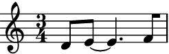
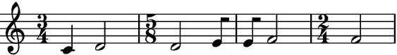
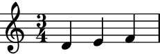
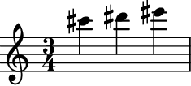
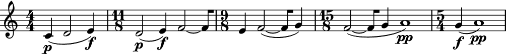
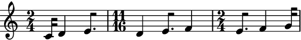

LeafLooper¶
- class auxjad.LeafLooper(contents: abjad.score.Container, *, window_size: int, step_size: int = 1, max_steps: int = 1, repetition_chance: float = 0.0, forward_bias: float = 1.0, head_position: int = 0, end_with_max_n_leaves: bool = False, omit_time_signatures: bool = False, process_on_first_call: bool = False, disable_rewrite_meter: bool = False, boundary_depth: Optional[int] = None, maximum_dot_count: Optional[int] = None, rewrite_tuplets: bool = True, prettify_rewrite_meter: bool = True, extract_trivial_tuplets: bool = True, fuse_across_groups_of_beats: bool = True, fuse_quadruple_meter: bool = True, fuse_triple_meter: bool = True, after_rest: Union[int, float, str, tuple, abjad.duration.Duration, abjad.score.Rest] = 0, after_rest_in_new_measure: bool = False, use_multimeasure_rests: bool = True)[source]¶
Outputs slices of an
abjad.Container(or child class) using the metaphor of a looping window of a constant number of elements. This number is given by the argumentwindow_size, which is anintrepresenting how many notes are to be included in each slice. The duration of the slice will be the sum of the duration of these notes.For instance, if the initial container had the logical ties \([A, B, C, D, E, F]\) (where each letter represents one logical tie) and the looping window was size
3, the output would be:\(A~ B~ C~ |~ B~ C~ D~ |~ C~ D~ E~ |~ D~ E~ F~ |~ E~ F~ |~ F\)
This can be better visualised as:
A B C B C D C D E D E F E F F- Basic usage:
Calling the object will return an
abjad.Selectiongenerated by the looping process. It takes a container (or child class equivalent) and the number of elements of the window as arguments. Each call of the object will move the window forwards and output the result.>>> container = abjad.Container(r"c'4 d'2 e'4 f'2 ~ f'8 g'4.") >>> abjad.show(container)
>>> looper = auxjad.LeafLooper(container, ... window_size=3, ... ) >>> notes = looper() >>> staff = abjad.Staff(notes) >>> abjad.show(staff)

>>> notes = looper() >>> staff = abjad.Staff(notes) >>> abjad.show(staff)
The property
current_windowcan be used to access the current window without moving the head forwards.>>> notes = looper.current_window >>> staff = abjad.Staff(notes) >>> abjad.show(staff)

process_on_first_call:The very first call will output the input container without processing it. To disable this behaviour and have the looping window move on the very first call, initialise the class with the keyword argument
process_on_first_callset toTrue.>>> container = abjad.Container(r"c'4 d'8 e'2 f'8 g'4") >>> looper = auxjad.LeafLooper(container, ... window_size=3, ... process_on_first_call=True, ... ) >>> notes = looper() >>> staff = abjad.Staff(notes) >>> abjad.show(staff)
- Using as iterator:
The instances of this class can also be used as an iterator, which can then be used in a for loop to exhaust all windows. Note that unlike the methods
output_n()andoutput_all(), time signatures are added to each window returned by the shuffler. Use the functionauxjad.mutate.remove_repeated_time_signatures()to clean the output when using this class in this way.>>> container = abjad.Container(r"c'4 d'2 e'8 f'2") >>> looper = auxjad.LeafLooper(container, ... window_size=2, ... ) >>> staff = abjad.Staff() >>> for window in looper: ... staff.append(window) >>> auxjad.mutate.remove_repeated_time_signatures(staff) >>> abjad.show(staff)
- Arguments and properties:
This class can take many optional keyword arguments during its creation.
step_sizedictates the size of each individual step in number of elements (default value is1).max_stepssets the maximum number of steps that the window can advance when the object is called, ranging between1and the input value (default is also1).repetition_chancesets the chance of a window result repeating itself (that is, the window not moving forwards when called). It should range from0.0to1.0(default0.0, i.e. no repetition).forward_biassets the chance of the window moving forward instead of backwards. It should range from0.0to1.0(default1.0, which means the window can only move forwards. A value of0.5gives \(50\%\) chance of moving forwards while a value of0.0will move the window only backwards).head_positioncan be used to offset the starting position of the looping window. It must be anintand its default value is0. Setend_with_max_n_leavestoTrueto end the process when the final window has the maximum number of leaves. The attributeafter_restsets the length of rests that separate consecutive iterations (default isabjad.Duration(0), i.e. no rest). When using after rests,after_rest_in_new_measuredictates whether or not rests are appended to the same output measure or to a new one. When in their own measure,use_multimeasure_restssets if multi-measure rests should be used or not.>>> container = abjad.Container(r"c'4 d'2 e'4 f'2 ~ f'8 g'4.") >>> looper = auxjad.LeafLooper(container, ... window_size=3, ... step_size=1, ... max_steps=2, ... repetition_chance=0.25, ... forward_bias=0.2, ... head_position=0, ... end_with_max_n_leaves=True, ... omit_time_signatures=False, ... process_on_first_call=True, ... after_rest=(1, 8), ... after_rest_in_new_measure=True, ... use_multimeasure_rests=False, ... ) >>> looper.window_size 3 >>> looper.step_size 1 >>> looper.repetition_chance 0.25 >>> looper.forward_bias 0.2 >>> looper.max_steps 2 >>> looper.head_position 0 >>> looper.end_with_max_n_leaves True >>> looper.omit_time_signatures False >>> looper.process_on_first_call True >>> looper.after_rest abjad.Duration((1, 8)) >>> looper.after_rest_in_new_measure True >>> looper.use_multimeasure_rests False
Use the properties below to change these values after initialisation.
>>> looper.window_size = 2 >>> looper.step_size = 2 >>> looper.max_steps = 3 >>> looper.repetition_chance = 0.1 >>> looper.forward_bias = 0.8 >>> looper.head_position = 2 >>> looper.end_with_max_n_leaves = False >>> looper.omit_time_signatures = True >>> looper.process_on_first_call = False >>> looper.after_rest = 0 >>> looper.after_rest_in_new_measure = False >>> looper.use_multimeasure_rests = True >>> looper.window_size 2 >>> looper.step_size 2 >>> looper.max_steps 3 >>> looper.repetition_chance 0.1 >>> looper.forward_bias 0.8 >>> looper.head_position 2 >>> looper.end_with_max_n_leaves False >>> looper.omit_time_signatures True >>> looper.process_on_first_call False >>> looper.after_rest abjad.Duration(0) >>> looper.after_rest_in_new_measure False >>> looper.use_multimeasure_rests True
- Setting
forward_biasto0.0: Set
forward_biasto0.0to move backwards instead of forwards (default is1.0). The initialhead_positionmust be greater than0otherwise the contents will already be exhausted in the very first call (since it will not be able to move backwards from that position).>>> container = abjad.Container(r"c'4 d'4 e'4 f'4") >>> looper = auxjad.LeafLooper(container, ... window_size=2, ... head_position=2, ... forward_bias=0.0, ... ) >>> notes = looper.output_all() >>> staff = abjad.Staff(notes) >>> abjad.show(staff)
forward_biasbetween0.0and1.0:Setting
forward_biasto a value in between0.0and1.0will result in random steps being taken forward or backward, according to the bias. The initial value ofhead_positionwill once gain play an important role here, as the contents might be exhausted if the looper attempts to move backwards after reaching the head position0.>>> container = abjad.Container(r"c'4 d'4 e'4 f'4 g'4 a'4 b'4 c''4") >>> looper = auxjad.LeafLooper(container, ... window_size=3, ... head_position=3, ... forward_bias=0.5, ... ) >>> notes = looper.output_n(5) >>> staff = abjad.Staff(notes) >>> abjad.show(staff)
max_steps:Setting the keyword argument
max_stepsto a value larger than1will result in a random number of steps (between1andmax_steps) being applied at each call.>>> container = abjad.Container( ... r"c'4 d'4 e'4 f'4 g'4 a'4 b'4 c''4 d''4 e''4" ... ) >>> looper = auxjad.LeafLooper(container, ... window_size=2, ... max_steps=4, ... ) >>> notes = looper.output_n(4) >>> staff = abjad.Staff(notes) >>> abjad.show(staff)
len():The function
len()can be used to get the total number of elements in the contents.>>> container = abjad.Container(r"c'4 d'2 e'4 f'2 ~ f'8 g'4.") >>> looper = auxjad.LeafLooper(container, ... window_size=3, ... ) >>> len(looper) 5
output_all():To run through the whole process and output it as a single container, from the initial head position until the process outputs the single last element, use the method
output_all().>>> container = abjad.Container(r"c'4 d'4 e'4 f'4") >>> looper = auxjad.LeafLooper(container, ... window_size=2, ... ) >>> window = looper.output_all() >>> staff = abjad.Staff(window) >>> abjad.show(staff)
tie_identical_pitches:When using
output_all(), set the keyword argumenttie_identical_pitchestoTruein order to tie identical notes or chords at the end and beginning of consecutive windows.>>> container = abjad.Container( ... r"c'4 d'2 r8 d'4 <e' g'>8 r4 f'2. <e' g'>16" ... ) >>> looper = auxjad.LeafLooper(container, ... window_size=4, ... disable_rewrite_meter=True, ... ) >>> notes = looper.output_all(tie_identical_pitches=True) >>> staff = abjad.Staff(notes) >>> abjad.show(staff)
output_n():To run through just part of the process and output it as a single container, starting from the initial head position, use the method
output_n()and pass the number of iterations as argument. Similarly tooutput_all(), the keyword argumenttie_identical_pitchesis available for tying pitches.>>> container = abjad.Container(r"c'4 d'4 e'4 f'4") >>> looper = auxjad.LeafLooper(container, ... window_size=2, ... ) >>> window = looper.output_n(2) >>> staff = abjad.Staff(window) >>> abjad.show(staff)
Tip
All methods that return an
abjad.Selectionwill add an initial time signature to it. Theoutput_n()andoutput_all()methods automatically remove repeated time signatures. When joining selections output by multiple method calls, useauxjad.mutate.remove_repeated_time_signatures()on the whole container after fusing the selections to remove any unecessary time signature changes.omit_time_signatures:To disable time signatures altogether, initialise this class with the keyword argument
omit_time_signaturesset toTrue(default isFalse), or use theomit_time_signaturesproperty after initialisation.>>> container = abjad.Container(r"c'4 d'2 e'4 f'2 ~ f'8 g'4.") >>> looper = auxjad.LeafLooper(container, ... window_size=3, ... omit_time_signatures=True, ... ) >>> notes = looper() >>> staff = abjad.Staff(notes) >>> abjad.show(staff)

after_rest:To append rests after the output (useful to create separations between consecutive windows), set the keyword argument
after_restto anint,float,tuple, orabjad.Durationwith the total length of the rests. Setting it toabjad.Duration(0)will disable rests (which is the default value).>>> container = abjad.Container(r"c'4 d'4 e'4 f'4") >>> looper = auxjad.LeafLooper(container, ... window_size=2, ... after_rest=(1, 8), ... ) >>> notes = looper.output_all() >>> staff = abjad.Staff(notes) >>> abjad.show(staff)
after_rest_in_new_measure:When using after rests, the keyword argument
after_rest_in_new_measurecontrols whether or not the rests are appended to the same output measure or to a new one.>>> container = abjad.Container(r"c'4 d'4 e'4 f'4") >>> looper = auxjad.LeafLooper(container, ... window_size=2, ... after_rest=(1, 8), ... after_rest_in_new_measure=True, ... ) >>> notes = looper.output_all() >>> staff = abjad.Staff(notes) >>> abjad.show(staff)
use_multimeasure_rests:When after rests are used and
after_rest_in_new_measureis set toTrue, multi-measure rests are automatically used. To use regular rests, setuse_multimeasure_reststoFalse.>>> container = abjad.Container(r"c'4 d'4 e'4 f'4") >>> looper = auxjad.LeafLooper(container, ... window_size=2, ... after_rest=(1, 8), ... after_rest_in_new_measure=True, ... use_multimeasure_rests=False, ... ) >>> notes = looper.output_all() >>> staff = abjad.Staff(notes) >>> abjad.show(staff)

Note
Multi-measure rests will not be used if
omit_time_signaturesisTrue, regardless of the value ofuse_multimeasure_rests.end_with_max_n_leaves:When
True, the last bar in the output will contain the maximum number of leaves given bywindow_size. E.g. consider the logical ties \([A, B, C, D]\) (where each letter represents one logical tie) and the looping window was size3; settingend_with_max_n_leavestoTruewill output:\(A~ B~ C~ |~ B~ C~ D\)
Setting it to
False(which is this property’s default value) will produces:\(A~ B~ C~ |~ B~ C~ D~ |~ C~ D~ |~ D\)
Compare the two examples below:
>>> container = abjad.Container(r"c'4 d'4. e'4 f'8") >>> looper = auxjad.LeafLooper(container, window_size=3) >>> notes = looper.output_all() >>> staff = abjad.Staff(notes) >>> abjad.show(staff)
>>> container = abjad.Container(r"c'4 d'4. e'4 f'8") >>> looper = auxjad.LeafLooper(container, ... window_size=3, ... end_with_max_n_leaves=True, ... ) >>> notes = looper.output_all() >>> staff = abjad.Staff(notes) >>> abjad.show(staff)
window_size:To change the size of the looping window after instantiation, use the property
window_size. In the example below, the initial window is of size3, and so the first call of the looper object outputs the first, second, and third leaves. The window size is then set to4, and the looper is called again, moving to the leaf in the next position, thus outputting the second, third, fourth, and fifth leaves.>>> container = abjad.Container(r"c'4 d'4 e'8 f'4 g'2") >>> looper = auxjad.LeafLooper(container, ... window_size=3, ... ) >>> notes = looper() >>> staff = abjad.Staff(notes) >>> abjad.show(staff)
>>> looper.window_size = 4 >>> notes = looper() >>> staff = abjad.Staff(notes) >>> abjad.show(staff)
contents:Use the
contentsproperty to read as well as overwrite the contents of the looper. Notice that thehead_positionwill remain on its previous value and must be reset to0if that’s required.>>> container = abjad.Container(r"c'4 d'4 e'4 f'4 g'4 a'4") >>> looper = auxjad.LeafLooper(container, ... window_size=3, ... ) >>> notes = looper() >>> staff = abjad.Staff(notes) >>> abjad.show(staff)

>>> notes = looper() >>> staff = abjad.Staff(notes) >>> abjad.show(staff)
>>> looper.contents = abjad.Container( ... r"cs'''4 ds'''4 es'''4 fs'''4" ... ) >>> notes = looper() >>> staff = abjad.Staff(notes) >>> abjad.show(staff)
>>> looper.head_position = 0 >>> notes = looper() >>> staff = abjad.Staff(notes) >>> abjad.show(staff)
- Indicators:
This class supports dynamics and slurs.
>>> container = abjad.Container( ... r"c'4\p( d'2 e'4\f) f'2( ~ f'8 g'4 a'1\pp)" ... ) >>> looper = auxjad.LeafLooper(container, ... window_size=3, ... disable_rewrite_meter=True, ... ) >>> notes = looper.output_n(5) >>> staff = abjad.Staff(notes) >>> abjad.show(staff)
disable_rewrite_meter:By default, this class uses the
abjad.Meter.rewrite_meter()mutation.>>> container = abjad.Container(r"c'16 d'4 e'8. f'4 g'16") >>> looper = auxjad.LeafLooper(container, ... window_size=3, ... ) >>> notes = looper.output_n(3) >>> staff = abjad.Staff(notes) >>> abjad.show(staff)
Set
disable_rewrite_metertoTruein order to disable this behaviour.>>> container = abjad.Container(r"c'16 d'4 e'8. f'4 g'16") >>> looper = auxjad.LeafLooper(container, ... window_size=3, ... disable_rewrite_meter=True, ... ) >>> notes = looper.output_n(3) >>> staff = abjad.Staff(notes) >>> abjad.show(staff)

Note
This class also accepts the properties
boundary_depth,maximum_dot_count, andrewrite_tuplets, which are passed on toabjad.Meter.rewrite_meter(), andfuse_across_groups_of_beats,fuse_quadruple_meter,fuse_triple_meter, andextract_trivial_tuplets, which are passed on toauxjad.mutate.prettify_rewrite_meter()(the latter can be disabled by settingprettify_rewrite_metertoFalse). See the documentation of those functions for more details on these arguments.Warning
This class can handle tuplets, but the engraving of the output is often quite complex and thus this functionality should be considered as experimental. Time signatures will be correct when dealing with partial tuplets (thus having non-standard values in their denominators) and consecutive partial tuplets will be merged when possible.
>>> container = abjad.Container(r"c'4 d'8 \times 2/3 {a4 g2}") >>> looper = auxjad.LeafLooper(container, ... window_size=2, ... ) >>> window = looper.output_all() >>> staff = abjad.Staff(window) >>> abjad.show(staff)

Tip
The functions
auxjad.mutate.remove_repeated_dynamics()andauxjad.mutate.reposition_clefs()can be used to clean the output and remove repeated dynamics and unnecessary clef changes.Warning
Do note that some elements that span multiple notes (such as ottava indicators, manual beams, etc.) can become problematic when notes containing them are split into two. As a rule of thumb, it is always better to attach those to the music after the fading process has ended.
Methods
__call__()Calls the looping process for one iteration, returning an
abjad.Selection.__init__(contents, *, window_size[, …])Initialises self.
__iter__()Returns an iterator, allowing instances to be used as iterators.
__len__()Returns the number of logical ties of
contents.__next__()Calls the looping process for one iteration, returning an
abjad.Selection.__repr__()Returns interpreter representation of
contents.output_all(*[, tie_identical_pitches])Goes through the whole looping process and outputs a single
abjad.Selection.output_n(n, *[, tie_identical_pitches])Goes through
niterations of the looping process and outputs a singleabjad.Selection.Attributes
Sets the length of the rest appended at the end of the window (default is
0).If
True, then after rests will be added to their own measure (default isFalse).Sets the argument
boundary_depthofabjad.Meter.rewrite_meter().The
abjad.Containerto be sliced and looped.Read-only property, returns the window at the current head position.
When
True, the durations of the notes in the output will not be rewritten by theabjad.Meter.rewrite_meter()mutation.When
True, the last bar in the output will contain the maximum number of leaves given bywindow_size.Sets the argument
extract_trivial_tupletsofauxjad.mutate.prettify_rewrite_meter().The chance of the window moving forward instead of backwards.
Sets the argument
fuse_across_groups_of_beatsofauxjad.mutate.prettify_rewrite_meter().Sets the argument
fuse_quadruple_meterofauxjad.mutate.prettify_rewrite_meter().Sets the argument
fuse_triple_meterofauxjad.mutate.prettify_rewrite_meter().The position of the head at the start of a looping window.
The maximum number of steps per operation.
Sets the argument
maximum_dot_countofabjad.Meter.rewrite_meter().When
True, the output will contain no time signatures.Used to enable or disable the mutation
auxjad.mutate.prettify_rewrite_meter()(defaultTrue).If
Truethencontentswill be processed in the very first call.The chance of the head not moving, thus repeating the output.
Sets the argument
rewrite_tupletsofabjad.Meter.rewrite_meter().The size of each step when moving the head.
If
True, then multi-measure rests will be used for after rests when added to their own measure (default isTrue).The length of the looping window.
- __call__() → abjad.select.Selection¶
Calls the looping process for one iteration, returning an
abjad.Selection.
- __init__(contents: abjad.score.Container, *, window_size: int, step_size: int = 1, max_steps: int = 1, repetition_chance: float = 0.0, forward_bias: float = 1.0, head_position: int = 0, end_with_max_n_leaves: bool = False, omit_time_signatures: bool = False, process_on_first_call: bool = False, disable_rewrite_meter: bool = False, boundary_depth: Optional[int] = None, maximum_dot_count: Optional[int] = None, rewrite_tuplets: bool = True, prettify_rewrite_meter: bool = True, extract_trivial_tuplets: bool = True, fuse_across_groups_of_beats: bool = True, fuse_quadruple_meter: bool = True, fuse_triple_meter: bool = True, after_rest: Union[int, float, str, tuple, abjad.duration.Duration, abjad.score.Rest] = 0, after_rest_in_new_measure: bool = False, use_multimeasure_rests: bool = True) → None[source]¶
Initialises self.
- __next__() → abjad.select.Selection¶
Calls the looping process for one iteration, returning an
abjad.Selection.
- property after_rest: abjad.duration.Duration¶
Sets the length of the rest appended at the end of the window (default is
0).
- property after_rest_in_new_measure: bool¶
If
True, then after rests will be added to their own measure (default isFalse).
- property boundary_depth: Optional[int]¶
Sets the argument
boundary_depthofabjad.Meter.rewrite_meter().
- property contents: abjad.score.Container¶
The
abjad.Containerto be sliced and looped.
- property current_window: Optional[abjad.select.Selection]¶
Read-only property, returns the window at the current head position.
- property disable_rewrite_meter: bool¶
When
True, the durations of the notes in the output will not be rewritten by theabjad.Meter.rewrite_meter()mutation. Rests will have the same duration as the logical ties they replaced.
- property end_with_max_n_leaves: bool¶
When
True, the last bar in the output will contain the maximum number of leaves given bywindow_size. E.g. consider the logical ties \([A, B, C, D]\) (where each letter represents one logical tie) and the looping window was size3; settingend_with_max_n_leavestoTruewill output:\(A~ B~ C~ |~ B~ C~ D\)
Setting it to
False(which is this property’s default value) will produces:\(A~ B~ C~ |~ B~ C~ D~ |~ C~ D~ |~ D\)
- property extract_trivial_tuplets: bool¶
Sets the argument
extract_trivial_tupletsofauxjad.mutate.prettify_rewrite_meter().
- property forward_bias: float¶
The chance of the window moving forward instead of backwards. It should range from
0.0to1.0(default1.0, which means the window can only move forwards. A value of0.5gives \(50\%\) chance of moving forwards while a value of0.0will move the window only backwards).
- property fuse_across_groups_of_beats: bool¶
Sets the argument
fuse_across_groups_of_beatsofauxjad.mutate.prettify_rewrite_meter().
- property fuse_quadruple_meter: bool¶
Sets the argument
fuse_quadruple_meterofauxjad.mutate.prettify_rewrite_meter().
- property fuse_triple_meter: bool¶
Sets the argument
fuse_triple_meterofauxjad.mutate.prettify_rewrite_meter().
- property head_position: int¶
The position of the head at the start of a looping window.
- property max_steps: int¶
The maximum number of steps per operation.
- property maximum_dot_count: Optional[int]¶
Sets the argument
maximum_dot_countofabjad.Meter.rewrite_meter().
- property omit_time_signatures: bool¶
When
True, the output will contain no time signatures.
- output_all(*, tie_identical_pitches: bool = False) → abjad.select.Selection¶
Goes through the whole looping process and outputs a single
abjad.Selection.
- output_n(n: int, *, tie_identical_pitches: bool = False) → abjad.select.Selection¶
Goes through
niterations of the looping process and outputs a singleabjad.Selection.
- property prettify_rewrite_meter: bool¶
Used to enable or disable the mutation
auxjad.mutate.prettify_rewrite_meter()(defaultTrue).
- property process_on_first_call: bool¶
If
Truethencontentswill be processed in the very first call.
- property repetition_chance: float¶
The chance of the head not moving, thus repeating the output.
- property rewrite_tuplets: bool¶
Sets the argument
rewrite_tupletsofabjad.Meter.rewrite_meter().
- property step_size: int¶
The size of each step when moving the head.
- property use_multimeasure_rests: bool¶
If
True, then multi-measure rests will be used for after rests when added to their own measure (default isTrue).
- property window_size: int¶
The length of the looping window.